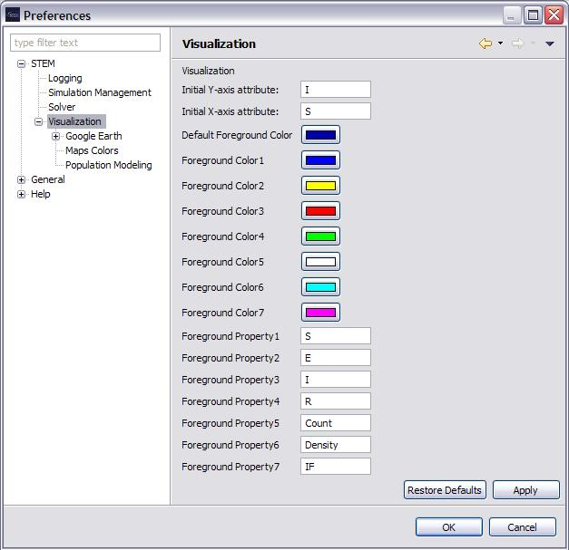

Visualization
The Visualization preferences specify the configuration values
that specify parameters that control the generation of visual
representations of a Simulation.
- "Name of the initial attribute to display:" This is
the text string that is the name of the property updated by a Decorator
to display by default. This means that if a Decorator
updates a property that has the specified character string as its name,
then it will select it as the default to display first. If the value is
"I", for instance, then it will display the "infectious" value
(Default: "I")
